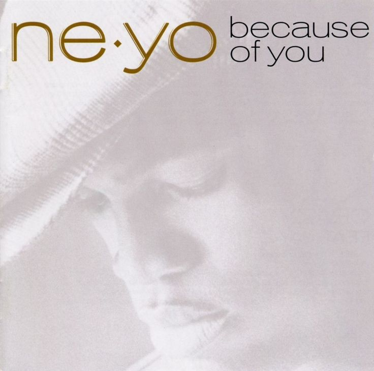

Because of You
Click any line to skip audio playback directly
♪ (Intro) ♪
Want to, but I can't help it
I love the way it feels
It's got me stuck between my fantasy and what is real
I need it when I want it, I want it when I don't
Tell myself I'll stop everyday, knowing that I won't
I got a problem and I don't know what to do
But I'm just about to pass out, no, it's gotta be you
I'm addicted to you, baby, you're a hard habit to break
Because of you, I never get enough
I need it every day, you're such a sugar rush
It makes me crazy thinking that somebody else might be with you
Baby, what did you do to me?
It's because of you
Because of you
Because of you
Because of you
And it's bittersweet, the feeling is so unique
Got me stumbling, got me daydreaming 'til I can't speak
And it's killing me, but I can't stop, no way
Want to walk away, but your love is making me stay
I got a problem and I don't know what to do
But I'm just about to pass out, no, it's gotta be you
I'm addicted to you, baby, you're a hard habit to break
Because of you, I never get enough
I need it every day, you're such a sugar rush
It makes me crazy thinking that somebody else might be with you
Baby, what did you do to me?
It's because of you
Because of you
Because of you
Because of you
Ain't no other love like yours, baby
You give me everything I need
And I can't take it no more
Because of you, I never get enough
I need it every day, you're such a sugar rush
It makes me crazy thinking that somebody else might be with you
Baby, what did you do to me?
It's because of you
(Because of you)
It's because of you
♪ (Outro) ♪